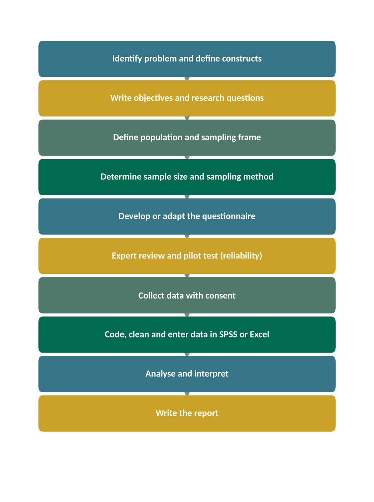
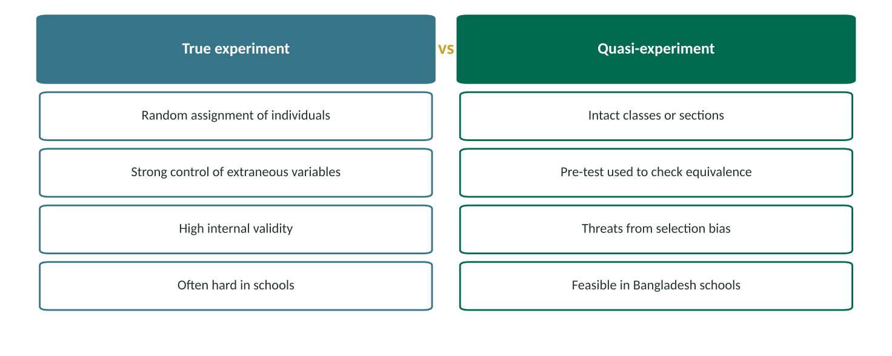
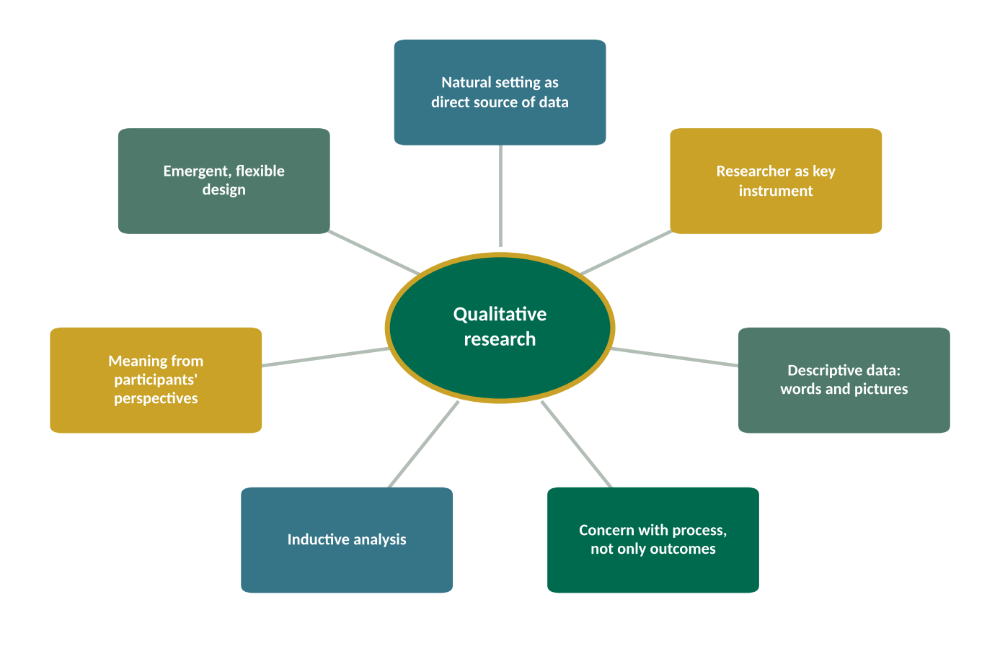
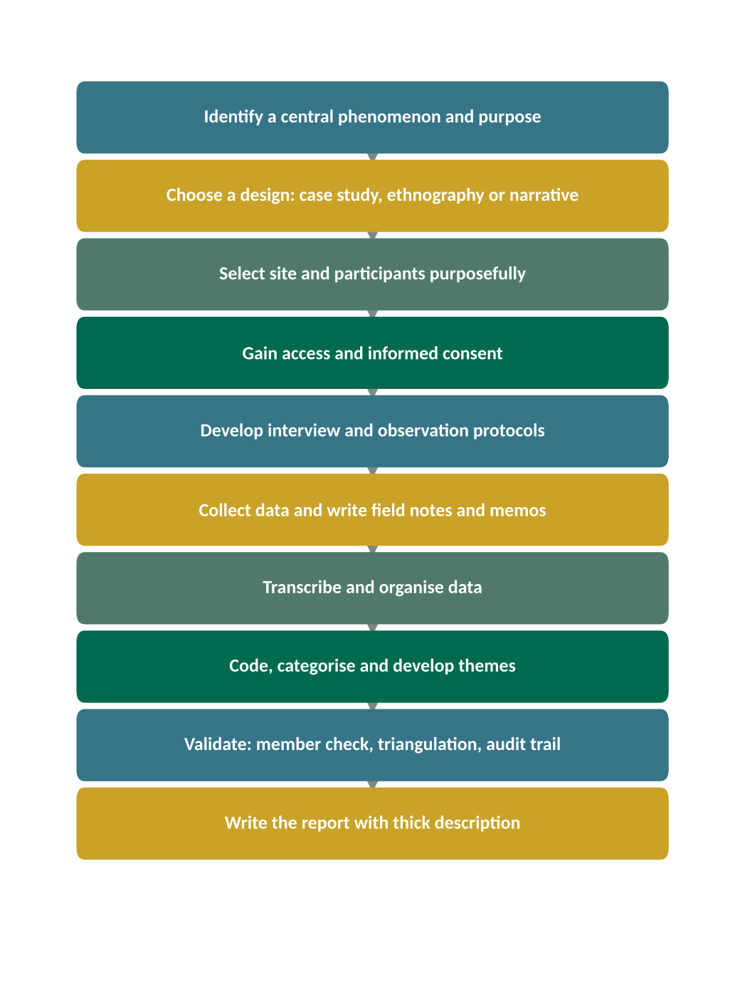
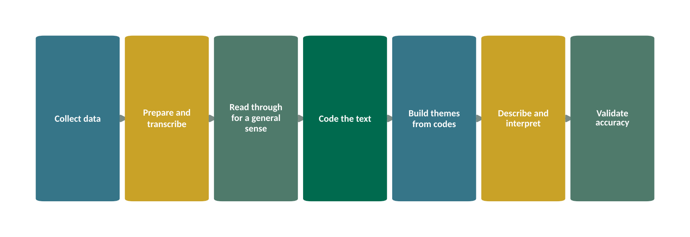
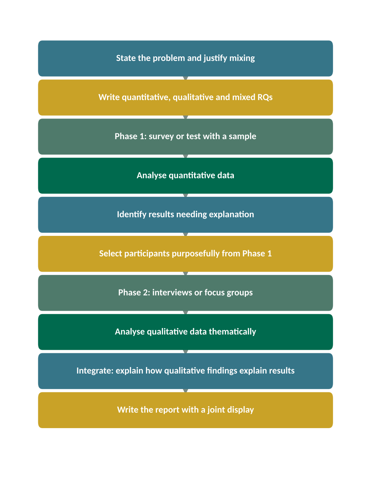
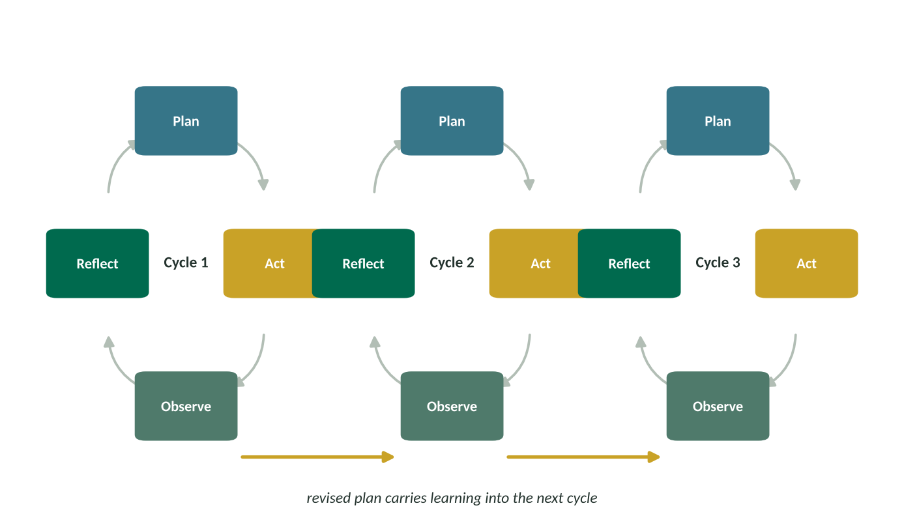
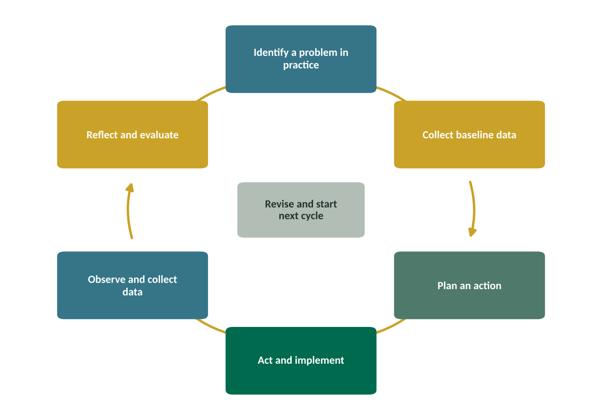
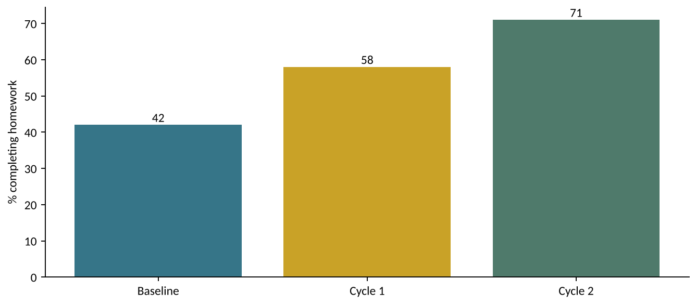
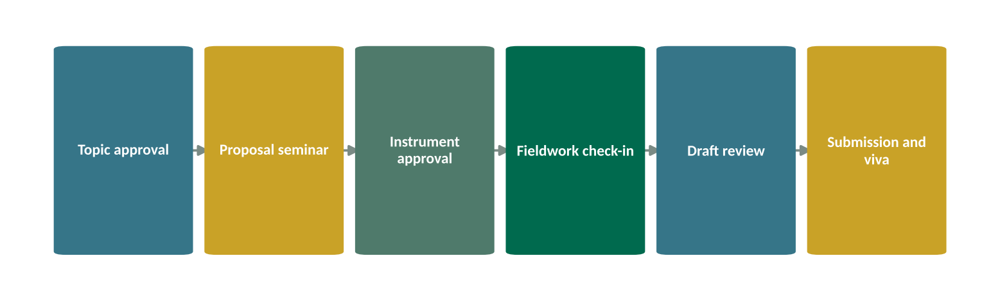

EER 583 Practicing Educational Research
A practical guide to designing and carrying out small-scale quantitative, qualitative, mixed methods and action research, and writing the research monograph
Contents
About this course
EER 583 is a practical course. Its purpose is not to teach research methods again (that was the work of ED 504 and EER 581) but to make learners do research: to choose a problem, design a study, collect and analyse real data and write a monograph under the guidance of the course teacher. The assessment is the research process itself and the final report.
These notes are therefore organised as a student's field guide. Each unit opens with a brief review of concepts, then gives a step-by-step design workflow, suitable problems in the Bangladesh context, ready-to-adapt instruments and protocols, a worked example, and a self-check list. A final section brings together the monograph structure, semester timeline, ethics forms and assessment rubrics that apply to every design.
Course objectives
Conduct a survey or other type of quantitative research.
Conduct a case study or other type of qualitative research.
Conduct an experimental research.
Conduct a mixed method research.
Conduct an action research.
Write and present a research report or monograph following APA style.
Contents
01 Unit 1: Quantitative Research (Survey and Experimental)
02 Unit 2: Qualitative Research (Case Study, Ethnography, Narratives)
03 Unit 3: Mixed Methods Research
04 Unit 4: Action Research
05 Writing the Monograph: Timeline, Ethics and Assessment
06 Exam Preparation Bank
07 References
Each unit follows the official M.Ed syllabus order. Read the narrative first, then the boxes, then test yourself with the Exam focus questions.
Teal boxes = definitions and study tips. Golden boxes = must-remember ideas and exam focus. Green boxes = Bangladesh context. Ash boxes = critical perspectives expected at Master's level. Amber Verify before use boxes mark policy facts and statistics that change: check them against the latest BANBEIS, MoE, DPE, NCTB, UGC, UNESCO or World Bank sources before an exam.
The final chapter is a question bank (MCQs with answers, short and broad questions) in the style of university examinations, followed by full references in APA 7th style.
Unit 1: Quantitative Research (Survey and Experimental)
1.1 Review of concepts
Quantitative research: An approach that investigates a problem by collecting numerical data from a sample, analysing them with statistics, and generalising findings to a population. It is based on a post-positivist view that reality can be measured, at least approximately, and that hypotheses can be tested (Creswell, 2008).
| Design | Purpose | Typical Master's project | Analysis |
|---|---|---|---|
| Descriptive survey | Describe attitudes, practices, opinions or characteristics of a population | Secondary teachers' use of formative assessment in Dhaka | Frequencies, percentages, means, SD |
| Correlational | Examine the relationship between two or more variables | Relationship between study habits and HSC GPA | Pearson r, Spearman rho, regression |
| Causal-comparative (ex post facto) | Compare existing groups on an outcome | Achievement of students who attend coaching vs. those who do not | t-test, ANOVA, chi-square |
| True experiment | Test cause and effect with random assignment | Effect of cooperative learning on Grade 8 science achievement | t-test, ANCOVA |
| Quasi-experiment | Test an intervention with intact groups | Effect of digital content on two existing sections of a class | ANCOVA on post-test with pre-test as covariate |
Table 1. Quantitative designs suitable for a one-semester project
Nature and sources of data
Primary data: collected by the researcher through questionnaires, tests, rating scales, observation schedules or structured interviews.
Secondary data: existing datasets such as BANBEIS statistics, board examination results, the National Student Assessment (NSA), school records, the Education Household Survey, or international datasets (e.g., MICS).
Levels of measurement: nominal (gender, school type), ordinal (Likert items, ranks), interval (test scores, scale totals) and ratio (age, hours of study). The level decides the statistic.
Every quantitative study rests on a chain: variable → operational definition → instrument → item → score → statistic → inference. A weak link anywhere (e.g., a vague construct, an unpiloted questionnaire) cannot be repaired by sophisticated analysis.
1.2 Step-by-step workflow for a survey

Figure 1. Workflow for a small-scale survey
Writing research questions and hypotheses
Descriptive RQ: "What is the level of ICT use in teaching among secondary teachers in Rajshahi city?"
Comparative RQ: "Is there a significant difference in ICT use between government and non-government school teachers?"
Relational RQ: "What is the relationship between teachers' ICT self-efficacy and their classroom ICT use?"
Null hypothesis (H₀): There is no significant difference in ICT use between male and female teachers.
Determining sample size
Cochran (infinite population): n₀ = Z² p q / e² = (1.96)² (0.5)(0.5) / (0.05)² ≈ 384
Finite population correction: n = n₀ / [1 + (n₀ − 1) / N]
Yamane (1967): n = N / (1 + N e²)
A district has N = 1,200 secondary teachers. With 95% confidence and a 5% margin of error: Cochran gives n₀ = 384.16, and with the finite population correction n = 384.16 / [1 + 383.16 / 1,200] = 291 teachers. Yamane gives n = 1,200 / (1 + 1,200 × 0.0025) = 1,200 / 4 = 300. For a one-semester Master's project, a smaller purposive or cluster sample (e.g., 100 to 150 teachers in 10 to 15 schools) is acceptable if the limitation on generalisation is clearly stated.
Students often over-promise. Agree a feasible scope with your supervisor early: one upazila or city corporation area, one level of education, one or two key variables, and a sample you can reach within four weeks of fieldwork.
Developing a questionnaire (Gillham, 2008; Cox & Cox, 2008)
1. List the constructs and sub-dimensions from the literature (a blueprint).
2. Write 4 to 8 items per dimension; use simple Bangla or English, one idea per item, and avoid double-barrelled, leading and negative items.
3. Choose response formats: 5-point Likert (Strongly disagree to Strongly agree), frequency scales (Never to Always), checklists or short open items.
4. Add a demographic section (gender, experience, school type, training) at the end.
5. Have 3 to 5 experts judge content validity; compute a content validity index (CVI) if possible.
6. Translate and back-translate if an instrument is adapted from English.
7. Pilot with 20 to 30 respondents outside the sample; compute Cronbach's alpha (α ≥ .70 acceptable) and revise unclear items.
| Dimension | Item | Scale |
|---|---|---|
| Sharing learning goals | I tell students what they are expected to learn at the start of the lesson. | 1 Never to 5 Always |
| Questioning | I ask questions that require students to explain their reasoning. | 1 Never to 5 Always |
| Feedback | I write comments on students' work explaining how to improve. | 1 Never to 5 Always |
| Peer and self-assessment | I give students opportunities to assess their own or each other's work. | 1 Never to 5 Always |
| Barriers | Large class size prevents me from giving individual feedback. | 1 Strongly disagree to 5 Strongly agree |
Table 2. Sample questionnaire items: teachers' use of formative assessment
1.3 Step-by-step workflow for an experiment

Figure 2. True experiment vs. quasi-experiment
1. Choose an intervention that can be implemented in 3 to 6 weeks (e.g., concept mapping, cooperative learning, multimedia content, think-pair-share, formative feedback).
2. Define the dependent variable and develop a test aligned with the content taught (use a table of specifications; compute reliability).
3. Select the design: pre-test/post-test control group design is the most practical.
4. Select groups: two comparable sections (e.g., Class 8 A and Class 8 B) in the same school, taught by the same or similarly qualified teachers.
5. Prepare lesson plans for both groups covering identical content; only the method differs.
6. Administer the pre-test, implement the treatment, then the post-test under identical conditions.
7. Control threats: same content and time, same test, blind marking where possible, monitoring of implementation fidelity.
8. Analyse: independent-samples t-test on gain scores or ANCOVA on post-test scores with pre-test as covariate; report effect size.
Pre-test/post-test control group design:
R O₁ X O₂ (experimental group)
R O₃ O₄ (control group)
R = random assignment; O = observation (test); X = treatment
| Threat | Example in a classroom study | Control |
|---|---|---|
| History | A school event or coaching affects one group | Run groups simultaneously; record events |
| Maturation | Students improve naturally over time | Use a control group |
| Testing | Pre-test sensitises students to post-test | Use parallel forms or longer gap |
| Instrumentation | Different markers or test versions | Same test, marking scheme and marker |
| Selection | Sections differ in ability at the start | Pre-test; ANCOVA; matching |
| Mortality (attrition) | Students absent at post-test | Track attendance; analyse completers and report losses |
| Diffusion of treatment | Control students borrow materials | Separate schedules; brief teachers |
| Experimenter effect | Researcher's enthusiasm boosts results | Use regular teacher; standard scripts |
Table 3. Threats to internal validity and how to handle them in a school experiment
Effect of cooperative learning on Grade 8 science achievement. Experimental group (n = 30): post-test M = 68.4, SD = 9.2. Control group (n = 30): M = 62.1, SD = 10.1. Independent-samples t-test: t(58) = 2.53, p = .014. Pooled SD ≈ 9.66, so Cohen's d = 6.3 / 9.66 ≈ 0.65, a medium-to-large effect. Report: "Students taught through cooperative learning scored significantly higher than those taught through the lecture method, t(58) = 2.53, p = .014, d = 0.65." If pre-test means differed, ANCOVA would be preferred.
1.4 Suitable quantitative problems in Bangladesh
Secondary teachers' attitudes towards inclusive education in a district.
Relationship between parental involvement and Grade 5 achievement in mathematics.
Use of private tutoring among HSC students and its relationship with GPA.
Effect of multimedia classroom content on students' achievement in Bangla grammar.
Students' satisfaction with online learning in a public university after COVID-19 (e.g., following BRAC, 2020).
Teachers' job satisfaction in government and MPO-listed non-government secondary schools.
Secondary sources such as BANBEIS annual statistics, the National Student Assessment (NSA) reports, and the BRAC (2020) rapid assessment of COVID-19 impacts can be used for background, triangulation or secondary analysis. Field access usually requires a permission letter from the department to the head teacher, and for government schools sometimes the Upazila or District Education Officer.
Check the current permission procedures for school-based research (e.g., whether DSHE, DPE or the district office must approve) and whether the university has a formal ethics review committee for Master's projects.
1.5 Data analysis and supervision checklist
| Research question | Variables | Statistic |
|---|---|---|
| Describe levels | One variable, interval or ordinal | Mean, SD, median, percentage |
| Compare two groups | Group (nominal) and score (interval) | Independent t-test (or Mann-Whitney U) |
| Compare same group twice | Pre and post scores | Paired t-test (or Wilcoxon) |
| Compare 3+ groups | Group and score | One-way ANOVA (or Kruskal-Wallis) |
| Association of categories | Two nominal variables | Chi-square test |
| Relationship | Two interval variables | Pearson r (or Spearman rho) |
| Prediction | Several predictors and one outcome | Multiple regression |
Table 4. Choosing a statistic for a Master's quantitative project
Common weaknesses in student surveys: unpiloted instruments, no reliability evidence, convenience samples described as "random", treating each Likert item as interval data without justification, reporting only percentages, and interpreting correlation as causation. In experiments: no pre-test, unequal teaching time, a test that does not match the treatment, and ignoring effect size.
Self-check list for Unit 1: (1) your research questions are answerable with numbers; (2) constructs are operationally defined; (3) the instrument has a blueprint, expert review, pilot and alpha; (4) sampling is described honestly; (5) data are cleaned and coded with a codebook; (6) each RQ is matched to an analysis; (7) tables follow APA format; (8) findings are discussed against the literature.
Likely questions: "Design a small-scale survey on a problem of your choice, stating objectives, sample, instrument and analysis." "Describe the steps of constructing and validating a questionnaire." "Explain the pre-test/post-test control group design and threats to internal validity." "How would you decide sample size for a survey of teachers in a district?"
Unit 2: Qualitative Research (Case Study, Ethnography, Narratives)
2.1 Review of characteristics
Qualitative research: An inquiry approach in which the researcher explores a central phenomenon in its natural setting, collects words, images and observations from a small number of participants, analyses them for themes, and interprets their meanings, while reflecting on his or her own role (Bogdan & Biklen, 2003; Creswell, 2008).

Figure 3. Characteristics of qualitative research (Bogdan & Biklen, 2003)
| Feature | Case study | Ethnography | Narrative inquiry |
|---|---|---|---|
| Focus | In-depth study of a bounded system (a school, programme, class or person) | Shared patterns of culture of a group | Life stories and experiences of individuals |
| Key question | How and why does this case work as it does? | How does this group live, behave and make meaning? | What are the stories people tell about their experiences? |
| Data | Interviews, observation, documents, artefacts | Prolonged participant observation, field notes, informal interviews | Long interviews, journals, letters, photographs |
| Analysis | Description of case and themes; cross-case if multiple | Description, analysis and interpretation of culture | Restorying: chronology, plot, setting, characters |
| Example in Bangladesh | How a rural secondary school implemented the new curriculum | Classroom culture of a madrasah or a char-land school | Life stories of female teachers in remote areas |
| Key authors | Stake (1995); Yin (2014); Merriam (2009) | Wolcott (2008); Spradley (1980) | Clandinin & Connelly (2000) |
Table 5. Three qualitative designs for the EER 583 project
2.2 Selecting a qualitative problem
Qualitative problems are framed around a central phenomenon and use open, exploratory language: explore, understand, describe, discover. A good test is whether the question begins with "how" or "what" and cannot be answered with a number.
Weak: "What percentage of teachers use multimedia?" (quantitative)
Better: "How do secondary teachers in a rural upazila experience the use of multimedia classrooms?"
Central question: "How do head teachers make sense of their role in school-based teacher professional development?"
Sub-questions: What practices do they describe? What constraints do they face? What support do they value?
| Design | Topic |
|---|---|
| Case study | Implementation of a school feeding programme in one primary school |
| Case study | How an inclusive school accommodates students with visual impairment |
| Ethnography | Peer culture and learning in a coaching centre |
| Ethnography | Daily life and learning of children in a Rohingya camp learning centre (with special ethical safeguards) |
| Narrative | Experiences of first-generation female university students |
| Narrative | Career stories of teachers who joined through NTRCA recruitment |
Table 6. Suitable qualitative topics
2.3 Step-by-step workflow

Figure 4. Workflow for a small-scale qualitative study
Purposeful sampling
Qualitative studies select information-rich cases. Strategies include maximal variation, typical case, extreme case, homogeneous, snowball and criterion sampling. For a semester project, 6 to 12 interview participants, or 1 to 3 cases, is realistic. Saturation (when new data add no new themes) guides when to stop.
Interview protocol (sample)
| Section | Questions and probes |
|---|---|
| Opening | Tell me about your teaching career and the subjects you teach. |
| Experience | Can you describe a recent lesson in which you used the multimedia classroom? What happened? How did students respond? |
| Meaning | What does using digital content mean for you as a teacher? Has it changed how you see your role? |
| Challenges | What difficulties do you face (electricity, devices, training, time)? Can you give an example? |
| Support | What support have you received from the head teacher, upazila office or colleagues? |
| Closing | Is there anything else you would like to tell me? May I contact you to check my interpretation? |
Table 7. Semi-structured interview protocol: teachers' experience of multimedia classrooms
Practise probing: "Can you tell me more?" "Can you give an example?" "How did you feel about that?" Silence is also a probe. Record with permission, take brief notes, and write a contact summary within 24 hours of each interview.
Observation protocol and field notes
Field notes have two columns: descriptive notes (what was seen and heard, with time, setting, people, actions, quotations) and reflective notes (the researcher's thoughts, hunches, questions and feelings). Spradley's (1980) nine dimensions (space, actors, activities, objects, acts, events, time, goals, feelings) help beginners decide what to observe.
Focus groups (Barbour, 2007)
A focus group of 6 to 8 participants discusses a topic guided by a moderator. It is useful for exploring shared views and how opinions form through interaction, e.g., students' views on guidebooks or parents' views on the new curriculum. Plan a topic guide of 5 to 7 questions, a note-taker, seating in a circle and a 60 to 90 minute session. Be careful with sensitive topics, since participants hear each other.
2.4 Analysing qualitative data

Figure 5. Creswell's (2008) qualitative analysis process
| Interview extract | Initial code | Category | Theme |
|---|---|---|---|
| "Load-shedding comes in the middle of the class and the projector just goes off." | Power interruption | Infrastructure constraints | Technology works only when the system works |
| "We had a three-day training but nobody showed us how to make content for chemistry." | Generic training | Inadequate professional development | Teachers learning alone |
| "I search YouTube at night and make slides myself." | Self-learning | Teacher agency | Teachers learning alone |
| "Students listen more when there is a picture or a video." | Student attention | Perceived benefits | Engagement but not always deeper learning |
| "The head teacher wants to see the multimedia register filled every week." | Monitoring pressure | Accountability | Compliance versus pedagogy |
Table 8. From data to themes: a worked coding example
Coding approaches: in vivo codes (participants' words), descriptive codes and process codes; open coding followed by grouping into categories (axial coding).
Tools: manual coding with colour highlighters or a spreadsheet; software such as NVivo, ATLAS.ti or the free QDA Miner Lite and Taguette.
Thematic analysis (Braun & Clarke, 2006): familiarisation, generating codes, searching for themes, reviewing themes, defining and naming themes, and writing up.
Trustworthiness
| Criterion | Parallel concept | Strategies |
|---|---|---|
| Credibility | Internal validity | Prolonged engagement, triangulation, member checking, peer debriefing |
| Transferability | External validity | Thick description of setting and participants |
| Dependability | Reliability | Audit trail, consistent protocols, code-recode |
| Confirmability | Objectivity | Reflexive journal, audit trail, quotations supporting claims |
Table 9. Lincoln and Guba's (1985) criteria and strategies
Common weaknesses: "qualitative" studies that merely tabulate open-ended answers; leading interview questions; no description of how codes became themes; long quotations with no interpretation; claiming generalisation from four interviews; and no reflexivity about the researcher's position (e.g., a teacher studying colleagues in her own school).
Positionality matters in Bangladesh: hierarchy (a junior researcher interviewing a head teacher or officer), gender norms (male researchers interviewing female participants in rural settings), and language (Bangla dialects, Indigenous languages such as Chakma or Santali) all shape data. Interviewing in the participant's language, choosing a comfortable venue and reassuring participants about anonymity improve data quality.
Likely questions: "Distinguish case study, ethnography and narrative research." "Design a qualitative study on a problem of your choice, with an interview protocol." "Explain the process of coding and theme development with an example." "How do you establish trustworthiness in qualitative research?"
Unit 3: Mixed Methods Research
3.1 Review of characteristics
Mixed methods research: A design in which the researcher collects, analyses and integrates both quantitative and qualitative data within a single study or series of studies, to gain a more complete understanding of a research problem than either approach alone could provide (Creswell & Plano Clark, 2018; Johnson & Christensen, 2008).
Why mix methods?
Triangulation: corroborate findings from different data (e.g., survey and interviews).
Complementarity: elaborate or explain results (e.g., why scores rose).
Development: use one method to build the other (e.g., interviews to develop a questionnaire).
Expansion: extend the breadth and range of inquiry.
Initiation: discover contradictions that generate new questions (Greene, Caracelli & Graham, 1989).

Figure 6. The three core mixed methods designs (Creswell & Plano Clark, 2018)
| Design | Sequence | Purpose | Example |
|---|---|---|---|
| Convergent (parallel) | QUAN + QUAL at the same time, then merge | Compare and validate results | Survey of 120 students on writing anxiety plus interviews with 8 students; compare (cf. Rezaei & Jafari, 2014) |
| Explanatory sequential | QUAN → qual | Explain quantitative results | Survey of teachers' assessment practices, then interviews with high and low scorers to explain differences |
| Exploratory sequential | QUAL → quan | Develop an instrument or test a theory | Focus groups with students on causes of dropout, then a questionnaire based on the themes |
| Embedded / intervention | QUAL inside an experiment | Understand how an intervention works | Writing-to-learn experiment with student interviews (cf. Hohenshell & Hand, 2006) |
Table 10. Core designs and their use in a semester project
Notation (Morse, 1991): capital letters show priority (QUAN, QUAL), lower case shows less weight (quan, qual), "+" means concurrent, "→" means sequential. QUAN → qual is an explanatory design with quantitative priority.
3.2 Selecting a mixed methods problem
A mixed methods problem is one where one type of data is not enough. Students should be able to write a mixed methods question that states how the two strands connect, e.g., "To what extent do the interview findings explain the survey results about why teachers rarely use peer assessment?"
Levels, types and causes of writing anxiety among EFL students in a Bangladeshi university.
Teachers' perceptions and practice of classroom assessment techniques (cf. Muhammad, Hafsa & Iqra, 2018).
Effect of a reading programme on Grade 3 fluency, and teachers' and parents' experiences of it.
Causes of student dropout in a haor-area secondary school: survey plus case narratives.
3.3 Step-by-step workflow

Figure 7. Workflow for an explanatory sequential study
Integration: the heart of mixed methods
Integration can happen at the level of design (sequencing), methods (connecting the sample of one strand to the other, building an instrument), analysis (merging, joint displays) and interpretation (discussing convergence, complementarity or discordance).
| Survey result (n = 140) | Interview theme (n = 10) | Integrated interpretation |
|---|---|---|
| Only 18% use peer assessment often | "Students cannot judge each other fairly" | Low use linked to doubts about students' competence |
| Use is higher among trained teachers (M = 3.4 vs. 2.6) | Trained teachers describe rubrics as making peer assessment possible | Training with rubrics may enable practice (confirming) |
| Class size not significantly related to use | Teachers still name large classes as a barrier | Perceived and statistical barriers diverge: discuss why (discordant) |
Table 11. Joint display example: teachers' use of peer assessment
A table of the type above is the single best way to show examiners that your study is genuinely mixed, rather than two separate studies stapled together.
Common weaknesses: no rationale for mixing; the qualitative strand reduced to a few open-ended survey items; the two strands reported separately without integration; and inconsistent paradigms. Pragmatism (what works for the question) is the usual philosophical justification.
Likely questions: "What is mixed methods research? Why is it used?" "Compare convergent, explanatory and exploratory designs with diagrams." "Design an explanatory sequential study on a problem in Bangladesh." "What is integration in mixed methods research? Explain joint displays."
Unit 4: Action Research
4.1 Review of concepts, nature and scope
Action research: A form of self-reflective inquiry undertaken by practitioners in social situations in order to improve the rationality and justice of their own practices, their understanding of these practices, and the situations in which the practices are carried out (Carr & Kemmis, 1986). In education it is research by teachers, for teachers, about their own practice (McNiff & Whitehead, 2005).

Figure 8. Kemmis and McTaggart's self-reflective spiral of action research
| Aspect | Conventional research | Action research |
|---|---|---|
| Who | External researcher | Teacher or practitioner as researcher |
| Purpose | Generate generalisable knowledge | Improve own practice and local situation |
| Design | Fixed in advance | Cyclical and emergent |
| Sample | Representative sample | Own class, school or group |
| Validity | Statistical and design rigour | Usefulness, credibility, triangulation, critical friends |
| Output | Journal article, thesis | Improved practice, report, shared learning |
Table 12. Action research compared with conventional research
Types and scope
Technical (improve effectiveness of a practice), practical (improve understanding and judgement) and emancipatory or critical (challenge constraints and inequities) (Grundy, 1982).
Individual, collaborative (a group of teachers) and school-wide action research.
Scope in education: teaching methods, classroom management, assessment, student motivation, attendance, homework, parental involvement, inclusive practice, school leadership.
Action research has been encouraged in B.Ed and M.Ed programmes, in PTI and TTC training, and in initiatives such as lesson study and teacher learning circles under PEDP and secondary projects. It suits Bangladesh classrooms because it needs few resources and addresses problems teachers actually face, such as large classes, absenteeism, weak reading or low participation of girls in discussion.
4.2 Selecting a problem and designing a framework
A good action research problem is within the teacher's control, important to students' learning, and small enough to change in 4 to 8 weeks. The question usually takes the form "How can I improve ...?" (McNiff & Whitehead, 2005).
| Concern | Action research question | Possible action |
|---|---|---|
| Many students do not complete homework | How can I increase homework completion in my Class 7 English class? | Shorter, differentiated tasks; homework diary; parent SMS |
| Students are silent in class | How can I encourage more students to participate in discussion? | Think-pair-share; wait time; random calling sticks |
| Weak reading fluency in Grade 3 | How can I improve the reading fluency of my weakest readers? | Paired reading; graded readers; daily 10-minute practice |
| Back-benchers disengaged | How can I engage back-bench students in mathematics? | Rotating seating; group work with roles |
| Low use of feedback | How can I help students use my feedback to improve their writing? | Two stars and a wish; redrafting time |
Table 13. Turning concerns into action research questions

Figure 9. The action research cycle used in the course project
Data collection tools for action research
Baseline and post data: attendance or homework registers, short tests, reading-fluency counts (words correct per minute), participation tallies.
Observation: a colleague as critical friend uses a simple checklist; video with permission.
Teacher research journal: daily reflections on what happened and why.
Student voice: exit tickets, short questionnaires, drawings or group discussions.
Artefacts: students' work samples before and after.
A Class 7 English teacher found that only 42% of 50 students completed homework over two baseline weeks. Cycle 1 introduced shorter differentiated tasks and a homework diary checked daily: completion rose to 58%. Reflection and student exit tickets showed that students without help at home struggled, so Cycle 2 added a 10-minute "homework start" session at the end of class and peer buddies: completion rose to 71%. The teacher triangulated the register data with journal notes and student comments and concluded that support at the point of starting the task mattered more than reminders. (Illustrative example.)

Figure 10. Homework completion across cycles (illustrative)
4.3 Conducting and reporting action research
| Section | Content |
|---|---|
| Context | School, class, the researcher's role and why the problem matters |
| Concern and question | How the problem was identified; the "How can I...?" question |
| Literature | What others have found about similar problems and actions |
| Baseline | Data showing the situation before action |
| Action plan | What was done, when and with whom |
| Cycles | For each cycle: action, observation data, reflection, changes |
| Evidence and validation | Triangulation; critical friend; validation group |
| Learning and claims | What improved, what the teacher learned, limits of the claims |
| Next steps | Further cycles and sharing with colleagues |
Table 14. Structure of an action research report
Validity in action research is established through triangulation, critical friends and validation meetings where colleagues examine the evidence for the claims (McNiff & Whitehead, 2005). Claims should be modest: "In my class, this action was associated with ...", not "this method improves homework everywhere".
Common weaknesses: choosing a problem outside the teacher's control (e.g., "lack of government funding"); only one cycle with no real reflection; no baseline data; collecting data only from the teacher's impressions; and confusing action research with a small experiment. Ethical issues also arise because the teacher is also the assessor, so students must be able to decline without penalty.
Likely questions: "Define action research and explain its characteristics." "Explain Kemmis and McTaggart's action research spiral." "Design an action research project to solve a classroom problem in Bangladesh." "Distinguish action research from conventional research." "How is validity established in action research?"
Writing the Monograph: Timeline, Ethics and Assessment
5.1 Structure of the research monograph
| Chapter | Content | Approx. share |
|---|---|---|
| Preliminaries | Title page, declaration, supervisor's certificate, acknowledgements, abstract (200 to 300 words), contents, lists of tables and figures, abbreviations | — |
| 1 Introduction | Background, problem statement, purpose, research questions or hypotheses, significance, scope, delimitations, operational definitions | 10% |
| 2 Literature review | Concepts, theories, empirical studies (international and Bangladesh), research gap, conceptual framework | 20% |
| 3 Methodology | Paradigm and approach, design, population and sample, instruments, validity and reliability or trustworthiness, procedures, analysis, ethics | 20% |
| 4 Results / findings | Tables and figures (quantitative) or themes with quotations (qualitative), organised by research question | 30% |
| 5 Discussion, conclusion and recommendations | Interpretation against literature, conclusions, implications, limitations, recommendations for practice and further research | 15% |
| References and appendices | APA 7th references; instruments, consent forms, permission letters, sample transcripts, coded data | 5% |
Table 15. Recommended monograph structure (about 10,000 to 15,000 words)
For an action research monograph, Chapters 3 and 4 are often merged into chapters describing each cycle. For a qualitative study, Chapter 4 is organised by themes rather than statistical tests.
5.2 Semester timeline
| Week | Activity | Output |
|---|---|---|
| 1–2 | Orientation; review of designs; choosing a problem | Two possible topics with rationale |
| 3–4 | Literature search and review; finalising questions and design | Concept note (2 to 3 pages) |
| 5–6 | Developing instruments; expert review; ethics and permission letters | Proposal presentation and approved instruments |
| 7 | Pilot testing and revision | Pilot report (reliability or protocol revision) |
| 8–11 | Fieldwork: data collection or action cycles | Raw data, field notes, journal |
| 12–13 | Data analysis | Tables, themes, joint display or cycle evidence |
| 14–15 | Writing Chapters 4 and 5; revising Chapters 1 to 3 | Full draft to supervisor |
| 16 | Final revision, submission and presentation (viva) | Bound monograph and slides |
Table 16. A 16-week plan for the EER 583 project

Figure 11. Supervision milestones
5.3 Research ethics in practice
Informed consent: a plain-language information sheet and signed consent; for children, parental consent and child assent.
Voluntary participation: participants may withdraw at any time without penalty; especially important when the researcher is also the teacher.
Confidentiality and anonymity: use pseudonyms for schools and people; store data securely; avoid identifying details in small communities.
Do no harm: avoid sensitive questions without support; take special care with vulnerable groups (children with disabilities, refugees, survivors of abuse).
Honesty: no fabrication, falsification or plagiarism; cite all sources in APA style; check similarity with plagiarism software if the university provides it.
Reciprocity: share findings with the school and thank participants.
| Element | Wording |
|---|---|
| Purpose | I am a Master of Education student at the Department of ... I am studying how teachers use assessment in their classrooms. |
| What is involved | You will be asked to fill in a questionnaire / take part in a 40-minute interview, which will be audio-recorded with your permission. |
| Voluntary | Your participation is voluntary. You may refuse to answer any question or withdraw at any time without any consequence. |
| Confidentiality | Your name and school will not be used in the report. Data will be kept securely and used only for this study. |
| Contact | If you have any questions, contact the researcher or the supervisor (phone/email). |
| Consent | I have read this information and agree to take part. Signature and date. |
Table 17. Sample consent statement (adapt and translate into Bangla)
Confirm whether the department requires a formal ethics clearance form for M.Ed monographs, and the word limit, formatting and binding requirements in the current M.Ed regulations.
5.4 Assessment rubric
The syllabus assesses students on (a) following the steps of research and (b) submission of a research report. The rubric below makes both transparent.
| Criterion | Excellent | Good | Satisfactory | Weak | Marks |
|---|---|---|---|---|---|
| Problem and questions | Significant, clearly justified, researchable | Clear and relevant | Somewhat vague | Unclear or not researchable | 10 |
| Literature review | Critical synthesis, includes Bangladesh studies, clear gap and framework | Relevant and organised | Descriptive summary | Thin or unrelated | 15 |
| Methodology | Design fully justified; sound sampling; validated instruments; ethics addressed | Appropriate and mostly justified | Basic description with gaps | Inappropriate or unclear | 20 |
| Data collection and analysis | Rigorous, correct and transparent | Correct with minor gaps | Partly correct | Incorrect or missing | 20 |
| Findings and discussion | Insightful, linked to RQs and literature | Clear, linked to RQs | Mostly descriptive | Confused or unsupported | 15 |
| Writing and APA style | Fluent, well organised, accurate APA | Clear with minor errors | Readable, several errors | Poorly written, citations missing | 10 |
| Presentation and viva | Confident, explains decisions | Clear | Adequate | Unable to explain the work | 10 |
Table 18. Analytic rubric for the EER 583 monograph (100 marks)
The same rubric (criteria 1 to 3) is used for the proposal seminar, so use it to check your proposal before fieldwork and act on the feedback you receive.
Likely questions: "Describe the structure of a research report or monograph." "What ethical issues must a researcher consider in a school-based study?" "Prepare a timeline for a small-scale research project." "Write an abstract for a study of your choice."
Exam Preparation Bank
Multiple-choice questions
1. EER 583 is mainly a:
(a) Theory course on research philosophy (b) Practical course in which learners conduct research (c) Statistics course (d) Course on test construction
Show answer
Answer: (b)
2. A study describing teachers' use of formative assessment in a district through a questionnaire is a:
(a) Descriptive survey (b) True experiment (c) Ethnography (d) Narrative study
Show answer
Answer: (a)
3. A study comparing achievement of students who do and do not attend coaching, without manipulation, is:
(a) Experimental (b) Causal-comparative (c) Action research (d) Ethnographic
Show answer
Answer: (b)
4. The key feature that distinguishes a true experiment from a quasi-experiment is:
(a) Use of a pre-test (b) Random assignment (c) Use of a control group (d) Use of a post-test
Show answer
Answer: (b)
5. With 95% confidence, p = 0.5 and e = 0.05, Cochran's n₀ is about:
(a) 196 (b) 300 (c) 384 (d) 400
Show answer
Answer: (c)
6. By Yamane's formula, with N = 1,200 and e = 0.05, the sample size is:
(a) 291 (b) 300 (c) 384 (d) 120
Show answer
Answer: (b)
7. An acceptable Cronbach's alpha for a research questionnaire is usually:
(a) ≥ .30 (b) ≥ .50 (c) ≥ .70 (d) Exactly 1.00
Show answer
Answer: (c)
8. "Do you agree that the head teacher is supportive and the training was useful?" is an example of a:
(a) Leading item (b) Double-barrelled item (c) Negative item (d) Open item
Show answer
Answer: (b)
9. In R O₁ X O₂ / R O₃ O₄, X stands for:
(a) Random assignment (b) Observation (c) Treatment (d) Control
Show answer
Answer: (c)
10. Students in the control group borrowing the experimental group's materials is a threat called:
(a) History (b) Maturation (c) Diffusion of treatment (d) Regression
Show answer
Answer: (c)
11. To compare post-test scores of two groups while controlling for pre-test differences, the best technique is:
(a) Chi-square (b) ANCOVA (c) Pearson r (d) Paired t-test
Show answer
Answer: (b)
12. In the worked example, t(58) = 2.53 and d ≈ 0.65. The effect size is best described as:
(a) Negligible (b) Small (c) Medium to large (d) Very large
Show answer
Answer: (c)
13. To test the association between school type and use of private tutoring (yes/no), use:
(a) Chi-square (b) t-test (c) ANOVA (d) Regression
Show answer
Answer: (a)
14. Bogdan and Biklen describe the researcher in qualitative research as:
(a) A neutral outsider (b) The key instrument (c) A statistician (d) An evaluator
Show answer
Answer: (b)
15. An in-depth study of a bounded system is a:
(a) Case study (b) Survey (c) Ethnography (d) Correlational study
Show answer
Answer: (a)
16. Studying the shared patterns of culture of a group through prolonged participant observation is:
(a) Narrative research (b) Ethnography (c) Case study (d) Action research
Show answer
Answer: (b)
17. "Restorying" is an analytic step in:
(a) Survey research (b) Ethnography (c) Narrative research (d) Experimental research
Show answer
Answer: (c)
18. Selecting participants who can provide rich information about the phenomenon is called:
(a) Random sampling (b) Purposeful sampling (c) Quota sampling (d) Systematic sampling
Show answer
Answer: (b)
19. The point at which new data no longer produce new themes is called:
(a) Saturation (b) Triangulation (c) Validity (d) Reliability
Show answer
Answer: (a)
20. Codes taken from the participants' own words are called:
(a) Axial codes (b) In vivo codes (c) Theoretical codes (d) Pattern codes
Show answer
Answer: (b)
21. The six-phase thematic analysis method is associated with:
(a) Braun and Clarke (b) Lincoln and Guba (c) Stake (d) Spradley
Show answer
Answer: (a)
22. In Lincoln and Guba's framework, transferability is achieved mainly through:
(a) Random sampling (b) Thick description (c) Statistical tests (d) Large samples
Show answer
Answer: (b)
23. Returning findings to participants to check accuracy is:
(a) Peer debriefing (b) Member checking (c) Audit trail (d) Saturation
Show answer
Answer: (b)
24. A focus group usually has about:
(a) 2 to 3 participants (b) 6 to 8 participants (c) 20 to 25 participants (d) 50 participants
Show answer
Answer: (b)
25. The defining feature of mixed methods research is:
(a) Using two questionnaires (b) Integrating quantitative and qualitative data (c) Using only interviews (d) Using a large sample
Show answer
Answer: (b)
26. QUAN → qual denotes a:
(a) Convergent design (b) Explanatory sequential design (c) Exploratory sequential design (d) Action research design
Show answer
Answer: (b)
27. A design that begins with focus groups and then develops a questionnaire is:
(a) Explanatory sequential (b) Exploratory sequential (c) Convergent (d) Experimental
Show answer
Answer: (b)
28. A table that places survey results beside interview themes is called a:
(a) Frequency table (b) Joint display (c) Contingency table (d) Codebook
Show answer
Answer: (b)
29. The philosophical position most often used to justify mixed methods is:
(a) Positivism (b) Pragmatism (c) Interpretivism (d) Critical realism only
Show answer
Answer: (b)
30. Greene, Caracelli and Graham (1989) used "complementarity" to mean:
(a) Corroborating results (b) Elaborating or clarifying results with the other method (c) Developing an instrument (d) Finding contradictions
Show answer
Answer: (b)
31. The definition of action research as "self-reflective inquiry undertaken by participants in social situations" comes from:
(a) Carr and Kemmis (b) Creswell (c) Bogdan and Biklen (d) Yin
Show answer
Answer: (a)
32. The action research spiral of plan, act, observe and reflect is associated with:
(a) Kemmis and McTaggart (b) Lewin only (c) Stake (d) Tyler
Show answer
Answer: (a)
33. A typical action research question begins:
(a) What percentage of ...? (b) How can I improve ...? (c) Is there a significant difference ...? (d) What is the correlation ...?
Show answer
Answer: (b)
34. A colleague who observes and gives honest feedback during action research is a:
(a) Gatekeeper (b) Critical friend (c) Key informant (d) Moderator
Show answer
Answer: (b)
35. Which is NOT a suitable action research problem for a class teacher?
(a) Low homework completion (b) Silent students in discussion (c) Lack of national education funding (d) Weak reading fluency
Show answer
Answer: (c)
36. Emancipatory action research aims mainly to:
(a) Improve test scores only (b) Challenge constraints and inequities (c) Develop questionnaires (d) Produce generalisable laws
Show answer
Answer: (b)
37. In the illustrative example, homework completion rose from 42% at baseline to:
(a) 58% after Cycle 2 (b) 71% after Cycle 2 (c) 71% after Cycle 1 (d) 90% after Cycle 2
Show answer
Answer: (b)
38. The chapter of a monograph that states the design, sample, instruments and procedures is:
(a) Introduction (b) Literature review (c) Methodology (d) Discussion
Show answer
Answer: (c)
39. Parental consent plus the child's own agreement is called:
(a) Child assent (b) Waiver (c) Deception (d) Debriefing
Show answer
Answer: (a)
40. The current edition of the APA Publication Manual is the:
(a) 5th (b) 6th (c) 7th (d) 8th
Show answer
Answer: (c)
Short questions
1. Distinguish a descriptive survey from a correlational study with examples.
2. State the steps of developing and validating a questionnaire.
3. How would you determine sample size for a survey of 1,200 teachers? Show the calculation.
4. Distinguish true experimental and quasi-experimental designs.
5. Name four threats to internal validity in a classroom experiment and how to control them.
6. What is effect size? Why should it be reported with a t-test?
7. State the characteristics of qualitative research according to Bogdan and Biklen.
8. Distinguish case study, ethnography and narrative research.
9. What is purposeful sampling? Name four strategies.
10. Write five questions of a semi-structured interview protocol on a topic of your choice.
11. Distinguish descriptive and reflective field notes.
12. Explain how codes become themes with an example.
13. Explain Lincoln and Guba's criteria of trustworthiness.
14. Why do researchers use mixed methods? State five purposes.
15. Draw and explain the explanatory sequential design.
16. What is a joint display?
17. Define action research and state its characteristics.
18. Draw the action research spiral.
19. What is a critical friend in action research?
20. State the main ethical principles for school-based research.
Broad questions
1. Design a small-scale descriptive survey on a problem in Bangladeshi education. State the problem, objectives, research questions, population and sample (with sample size calculation), instrument, validation, data collection and analysis plan.
2. Design a pre-test/post-test control group experiment to test the effect of a teaching method on students' achievement. Discuss threats to internal validity and how you would control them, and explain how you would analyse and report the results.
3. "Quantitative research is only as good as its instrument." Discuss with reference to questionnaire and test construction, piloting, reliability and validity.
4. Design a qualitative case study of a school or programme in Bangladesh. Include the central question, site and participant selection, protocols, data analysis and strategies for trustworthiness.
5. Compare case study, ethnography and narrative research in terms of focus, data collection, analysis and reporting, with examples from education.
6. Explain the process of qualitative data analysis from transcription to themes, illustrating with an example of coding.
7. What is mixed methods research? Compare the convergent, explanatory sequential and exploratory sequential designs with diagrams and educational examples.
8. Design an explanatory sequential mixed methods study on classroom assessment practices. Explain how you would integrate the two strands.
9. Define action research. Explain the action research cycle and design an action research project to solve a specific classroom problem.
10. Critically discuss the strengths and limitations of action research as a means of teacher professional development in Bangladesh.
11. Describe the structure of a research monograph and explain what each chapter should contain.
12. Discuss the ethical issues that arise in educational research with children and teachers in Bangladesh, and explain how a researcher should address them.
References
American Psychological Association. (2020). Publication manual of the American Psychological Association (7th ed.). APA.
Barbour, R. (2007). Doing focus groups. Sage.
Baumfield, V., Hall, E., & Wall, K. (2008). Action research in the classroom. Sage.
Best, J. W., & Kahn, J. V. (2006). Research in education (10th ed.). Prentice Hall.
Bogdan, R. C., & Biklen, S. K. (2003). Qualitative research for education: An introduction to theories and methods (4th ed.). Allyn & Bacon.
BRAC. (2020). A rapid assessment: Impact of COVID-19 on education in Bangladesh. BRAC Advocacy for Social Change and BRAC Education Programme.
Braun, V., & Clarke, V. (2006). Using thematic analysis in psychology. Qualitative Research in Psychology, 3(2), 77–101.
Carr, W., & Kemmis, S. (1986). Becoming critical: Education, knowledge and action research. Falmer Press.
Clandinin, D. J., & Connelly, F. M. (2000). Narrative inquiry: Experience and story in qualitative research. Jossey-Bass.
Clough, P., & Nutbrown, C. (2007). A student's guide to methodology (2nd ed.). Sage.
Cox, J., & Cox, K. B. (2008). Your opinion, please! How to build the best questionnaires in the field of education (2nd ed.). Corwin Press.
Creswell, J. W. (2008). Educational research: Planning, conducting, and evaluating quantitative and qualitative research (3rd ed.). Merrill Prentice Hall.
Creswell, J. W., & Plano Clark, V. L. (2018). Designing and conducting mixed methods research (3rd ed.). Sage.
Denzin, N. K., & Lincoln, Y. S. (Eds.). (2008). Strategies of qualitative inquiry (3rd ed.). Sage.
Fraenkel, J. R., & Wallen, N. E. (2009). How to design and evaluate research in education (7th ed.). McGraw-Hill.
Gall, M. D., Gall, J. P., & Borg, W. R. (2007). Educational research: An introduction (8th ed.). Allyn & Bacon.
Gay, L. R., & Airasian, P. (2003). Educational research: Competencies for analysis and applications (7th ed.). Merrill Prentice Hall.
Gillham, B. (2008). Developing a questionnaire (2nd ed.). Continuum.
Greene, J. C., Caracelli, V. J., & Graham, W. F. (1989). Toward a conceptual framework for mixed-method evaluation designs. Educational Evaluation and Policy Analysis, 11(3), 255–274.
Grundy, S. (1982). Three modes of action research. Curriculum Perspectives, 2(3), 23–34.
Hohenshell, L. M., & Hand, B. (2006). Writing-to-learn strategies in secondary school cell biology: A mixed method study. International Journal of Science Education, 28(2–3), 261–289. https://doi.org/10.1080/09500690500336965
Hopkins, D. (2002). A teacher's guide to classroom research (3rd ed.). Open University Press.
Johnson, B., & Christensen, L. (2008). Educational research: Quantitative, qualitative, and mixed approaches (3rd ed.). Sage.
Kemmis, S., & McTaggart, R. (Eds.). (1988). The action research planner (3rd ed.). Deakin University Press.
Kothari, C. R. (2004). Research methodology: Methods and techniques (2nd ed.). New Age International.
Lincoln, Y. S., & Guba, E. G. (1985). Naturalistic inquiry. Sage.
Lodico, M. G., Spaulding, D. T., & Voegtle, K. H. (2006). Methods in educational research: From theory to practice. Jossey-Bass.
Lunenburg, F. C., & Irby, B. J. (2008). Writing a successful thesis or dissertation. Corwin Press.
Malak, M. S., Sharma, U., & Deppeler, J. M. (2018). Predictors of primary schoolteachers' behavioural intention to teach students demonstrating inappropriate behaviour in regular classrooms. Cambridge Journal of Education, 48(4), 495–514.
McNiff, J., & Whitehead, J. (2005). Action research for teachers: A practical guide. David Fulton.
Mohiuddin, G. (2015). A study on educational assessment of secondary and higher secondary teachers of Bangladesh. World Scientific News, 16, 95–115.
Morse, J. M. (1991). Approaches to qualitative-quantitative methodological triangulation. Nursing Research, 40(2), 120–123.
Muhammad, S., Hafsa, T., & Iqra, L. (2018). Teachers' perceptions about the use of classroom assessment techniques in elementary and secondary schools. Bulletin of Education and Research, 40(1), 115–130.
Punch, K. F. (2009). Introduction to research methods in education. Sage.
Rezaei, M., & Jafari, M. (2014). Investigating the levels, types, and causes of writing anxiety among Iranian EFL students: A mixed method design. Procedia: Social and Behavioral Sciences, 98, 1545–1554.
Robinson, V., & Lai, M. K. (2006). Practitioner research for educators: A guide to improving classrooms and schools. Corwin Press.
Sharp, J. G. (2009). Success with your education research project. Learning Matters.
Spradley, J. P. (1980). Participant observation. Holt, Rinehart and Winston.
Stake, R. E. (1995). The art of case study research. Sage.
Winthrop, R., & Kirk, J. (2008). Learning for a bright future: Schooling, armed conflict, and children's well-being. Comparative Education Review, 52(4), 639–661.
Yamane, T. (1967). Statistics: An introductory analysis (2nd ed.). Harper & Row.
Yin, R. K. (2014). Case study research: Design and methods (5th ed.). Sage.